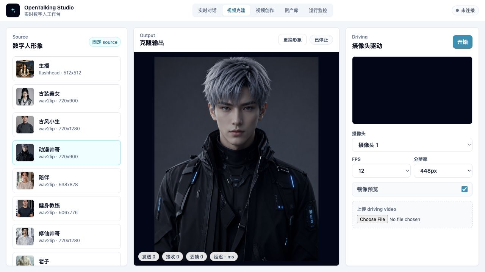

FasterLivePortrait¶
什么时候使用 FasterLivePortrait¶
FasterLivePortrait 适合单张 CUDA GPU 上的实时数字人头像驱动。OpenTalking 当前把它接入到 OmniRT，主要提供两条能力：
- 实时对话：固定数字人形象作为 source，由 TTS/audio 经过 JoyVASA 生成运动，再由 FasterLivePortrait 贴回原始形象。
- 视频克隆：固定数字人形象作为 source，由浏览器摄像头或上传视频作为 driving video，实时驱动数字人的表情和头动。
实时对话仍走 OpenTalking 的 LLM / STT / TTS / WebRTC 会话链路。视频克隆只做视频驱动，不进入 LLM、TTS 或 STT 对话链路。

概念边界¶
| 概念 | 含义 |
|---|---|
source |
OpenTalking 形象库里的数字人图片或视频资产，是最终被驱动和展示的角色。 |
driving |
摄像头实时帧或上传的自拍视频，只提供表情、嘴型和头动。 |
| 贴回原图 | 将驱动后的人脸区域拼回 source 原始构图，尽量保留半身图、背景和画面比例。 |
| 裁剪 driving | 只裁剪 driving 视频中的人脸区域参与驱动。视频克隆里可以关闭，用完整 driving 画面做检测和预览。 |
视频克隆不会把摄像头本人当成 source。摄像头或上传视频只作为 driving 输入。
推荐 Runtime Backend¶
FasterLivePortrait 推荐通过 omnirt 接入。OpenTalking 负责 WebUI、Avatar 选择、会话或视频克隆 bridge、WebRTC/画面展示和参数下发；OmniRT 负责加载 FasterLivePortrait、JoyVASA、TensorRT/ONNXRuntime 组件和模型权重。
| 能力 | OpenTalking 入口 | OmniRT 入口 |
|---|---|---|
| 实时对话音频驱动 | 普通会话创建和 /sessions/{id}/speak |
/v1/audio2video/fasterliveportrait |
| 视频克隆视频驱动 | WebUI “视频克隆”工作台 | /v1/video2video/fasterliveportrait |
| 模型状态 | /models 或 WebUI 状态 |
/v1/audio2video/models |
权重与源码要求¶
OmniRT 侧需要一个 FasterLivePortrait 源码目录和一个 checkpoint 目录。公共文档建议用环境变量描述路径，避免把模型放进 OpenTalking 仓库：
export DIGITAL_HUMAN_HOME=/opt/digital_human
export OPENTALKING_HOME="$DIGITAL_HUMAN_HOME/opentalking"
export OMNIRT_HOME="$DIGITAL_HUMAN_HOME/omnirt"
export FASTERLIVEPORTRAIT_HOME="$DIGITAL_HUMAN_HOME/model-repos/LivePortrait"
export OMNIRT_MODEL_ROOT="$DIGITAL_HUMAN_HOME/models"
checkpoint 目录至少包含：
$OMNIRT_MODEL_ROOT/FasterLivePortrait/checkpoints/
JoyVASA/
motion_generator/motion_generator_hubert_chinese.pt
motion_template/motion_template.pkl
chinese-hubert-base/
config.json
preprocessor_config.json
pytorch_model.bin
liveportrait/ 或 appearance_feature_extractor.onnx 等 FasterLivePortrait ONNX/TRT 文件
部署前先检查关键文件：
test -f "$OMNIRT_MODEL_ROOT/FasterLivePortrait/checkpoints/JoyVASA/motion_generator/motion_generator_hubert_chinese.pt"
test -f "$OMNIRT_MODEL_ROOT/FasterLivePortrait/checkpoints/JoyVASA/motion_template/motion_template.pkl"
test -f "$OMNIRT_MODEL_ROOT/FasterLivePortrait/checkpoints/chinese-hubert-base/pytorch_model.bin"
启动 OmniRT¶
cd "$OMNIRT_HOME"
uv sync --extra server --extra fasterliveportrait --python 3.11
OMNIRT_FASTLIVEPORTRAIT_RUNTIME=1 \
OMNIRT_FASTLIVEPORTRAIT_LOAD_MODELS=1 \
OMNIRT_FASTLIVEPORTRAIT_ROOT="$FASTERLIVEPORTRAIT_HOME" \
OMNIRT_FASTLIVEPORTRAIT_CHECKPOINTS_DIR="$OMNIRT_MODEL_ROOT/FasterLivePortrait/checkpoints" \
OMNIRT_FASTLIVEPORTRAIT_CFG=configs/trt_infer.yaml \
OMNIRT_FASTLIVEPORTRAIT_DEVICE=cuda:0 \
OMNIRT_FASTLIVEPORTRAIT_JPEG_QUALITY=85 \
uv run omnirt serve-avatar-ws --host 0.0.0.0 --port 9000 --backend cuda
验证 OmniRT 侧模型状态：
curl -s http://127.0.0.1:9000/v1/audio2video/models | jq '.statuses[] | select(.id=="fasterliveportrait")'
期望返回 connected=true。
下一步
OmniRT 返回 connected=true 后，继续看下一节启动 OpenTalking WebUI。这一节会启动 OpenTalking API 和前端页面。通用启动脚本说明见命令行工具，端口、host、OmniRT endpoint 等参数见命令行进阶参数。
启动 OpenTalking WebUI¶
OpenTalking 默认通过 OmniRT 使用 FasterLivePortrait。下面命令会启动 OpenTalking API / unified 后端，并由 start_unified.sh 拉起 WebUI：
cd "$OPENTALKING_HOME"
export OPENTALKING_OMNIRT_ENDPOINT=http://127.0.0.1:9000
export OMNIRT_ENDPOINT=http://127.0.0.1:9000
bash scripts/start_unified.sh --backend omnirt --model fasterliveportrait
启动成功后，终端会打印 WebUI 地址，默认是 http://127.0.0.1:5173。打开页面后：
- 做音频驱动实时对话：进入“实时对话”，选择 FasterLivePortrait 和合适的数字人形象。
- 做摄像头或上传视频驱动：进入“视频克隆”，具体操作见视频克隆使用指南。
如果只想在 WebUI 里验证视频克隆，仍然需要 OpenTalking API 能访问 OmniRT，并且 /models 中 fasterliveportrait 为 connected。
实时对话参数¶
实时对话默认参数位于 configs/synthesis/fasterliveportrait.yaml。常用字段：
| 参数 | 作用 | 常用设置 |
|---|---|---|
width / height |
输出规格 | 实时优先从 448 宽开始 |
fps |
输出帧率 | 默认 25 |
animation_region |
驱动区域 | 对话默认 lip，减少全脸夸张 |
head_motion_multiplier |
整体头动幅度 | 0.2-0.8 |
pose_motion_multiplier |
姿态幅度 | 0.2-0.5 |
mouth_open_multiplier |
张嘴开合幅度 | 1.0-1.4 |
mouth_corner_multiplier |
嘴角牵动幅度 | 0.7-1.0 |
driving_multiplier |
整体关键点幅度 | 0.8-1.2 |
cfg_scale |
JoyVASA 音频跟随强度 | 3.5-4.5 |
flag_stitching |
稳定人脸边缘 | 建议开启 |
flag_normalize_lip |
减少初始嘴型偏差 | 建议开启 |
flag_relative_motion |
保留 source 基础姿态 | 对话默认开启 |
flag_lip_retargeting |
增强嘴部跟随 | 按效果开启 |
前端选择 FasterLivePortrait 后可以热更新这些幅度参数。会话运行中应用配置后，通常从下一段音频 chunk 开始生效。
视频克隆参数¶
视频克隆工作台提供 source 选择、driving 输入和实时参数面板。第一版主路径是摄像头实时驱动，上传 driving video 用于验证或准实时测试。
| 控件 | 作用 | 建议 |
|---|---|---|
| 摄像头 | 选择浏览器输入设备 | 首次使用需要允许浏览器摄像头权限 |
| FPS | 摄像头采样频率 | 从 12 或 15 开始 |
| 分辨率 | driving 帧采样尺寸 | 从 448px 开始 |
| 镜像预览 | 只影响本地预览观感 | 自拍摄像头通常开启 |
| 驱动区域 | all / exp / pose / lip / eye |
口型测试先用 lip 或 exp，表情展示用 all |
| 拼回原图 | 将结果贴回 source 原图 | 建议开启，避免头像被放大成只剩头部 |
| 裁剪 driving 人脸 | 是否裁剪 driving 输入 | 上传视频比例异常时可关闭 |
| 唇形重定向 | 增强嘴部跟随 | 嘴鼓或张不开时可尝试开启 |
| 相对运动 | 保留 source 原始姿态差异 | 唇形重定向开启后通常关闭，避免嘴型只剩上下开合 |
如果上传视频驱动时嘴部“鼓鼓的”或张不开，优先按这个顺序排查：
- 关闭
裁剪 driving 人脸，确认 driving 视频没有被裁到过窄。 - 开启
拼回原图，避免输出只显示裁剪后头部。 - 开启
唇形重定向，同时关闭相对运动。 - 将
animation_region从lip改为exp或all，观察是否恢复嘴角和脸颊运动。 - 适度调整
mouth_open_multiplier到0.8-1.3，mouth_corner_multiplier到1.0-1.3。
唇形重定向能改善嘴部跟随，但如果和相对运动叠加，有时会把嘴型简化成主要上下开合。视频克隆工作台建议把这两个开关作为组合调试。
Avatar 要求¶
- source 应尽量是清晰正脸或半身图。
- 如果希望保留半身构图，打开
拼回原图。 - 头像比例或裁剪不符合预期时，先检查 Avatar 预览图和 source 原图，而不是只调 driving 参数。
- 视频克隆可以使用现有形象库资产，不需要把摄像头本人上传为 Avatar。
验证¶
- 启动 OmniRT，并确认
fasterliveportraitconnected。 - 启动 OpenTalking WebUI。
- 打开“实时对话”，选择 FasterLivePortrait，发送一句短文本，确认音频驱动链路不回归。
- 打开“视频克隆”，选择数字人 source，允许摄像头权限，点击开始，确认主画面显示 source 被摄像头表情驱动。
- 停止或切页后，确认摄像头 track、WebSocket session 和 OmniRT 会话释放。
常见问题¶
/models 显示 runtime_not_enabled¶
确认 OmniRT 启动时设置了 OMNIRT_FASTLIVEPORTRAIT_RUNTIME=1，并检查 checkpoint 路径。
音频驱动没有口型¶
检查 JoyVASA motion generator、motion template 和 chinese-hubert-base/pytorch_model.bin 是否存在。
视频克隆无法启动摄像头¶
确认页面通过 localhost / 127.0.0.1 或 HTTPS 打开，浏览器允许摄像头权限，并且 OpenTalking API 能连接 OmniRT。
上传视频嘴型和摄像头效果不一致¶
上传视频可能受原视频分辨率、脸部位置、裁剪和缩放影响。先关闭 driving 裁剪，再调唇形重定向、相对运动和嘴部幅度。